To store data on forms as well as in widgets, tasks, or business process start events, you can use sets of fields. The information you want to display determines the field types you need to use. For example, you can create a String type field for a comment and a Money type field for a contract amount.
Read more about adding fields to forms in the Context tab article. Below you can find the description of all the data types available in the system. Read about working with different types in scripts in BRIX TS SDK.
String
This type is used to add text information.
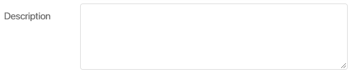
The content can be displayed as a string or as text. The Markdown option allows you to format the text you enter. Read more in the Markdown article.
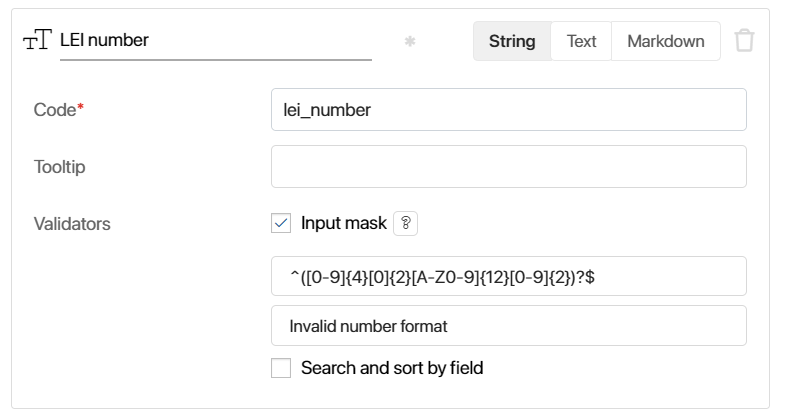
Apart from general settings, this type has an additional setting:
- Validators. Here you can set a template to validate the text that the user enters.
- Input mask. An input mask is a set of regular expressions. Only expressions without flags are available in masks. Read more about writing regular expressions in the MDN Web Docs documentation.
- Message shown when the input does not comply with the mask. Write a message shown when the user enters text that doesn’t comply with the input mask. Read more in the Create input masks for Strings using regular expressions article.
Number
This field is used for entering numbers. It is not possible to enter other characters than digits.
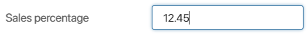
When adding the property, select its type:
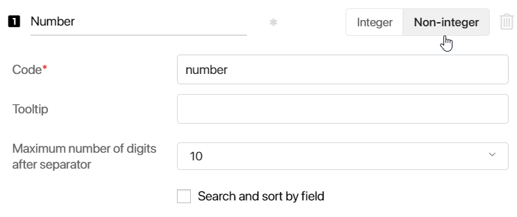
- Integer or Non-integer. Here you can select the number format.
- Maximum number of digits after separator. This option is available only for non-integers and allows you to specify how many decimal places will be displayed on the form. The limit is selected from the list ranging from two to ten. Let’s say a field is calculated using a formula, and you set the maximum number to digits after separator to 2. If the result of the calculation is 3.14159, only 3.14 will be displayed on the form.
If a user types the number manually on the create or edit form, they will not be able to enter more decimal places than specified by the limit.
The calculation of a non-integer in the system may be inaccurate due to the peculiarities of JavaScript language execution in the user’s browser and in NodeJS on the server. Read more about it in the article Inaccurate calculations in JavaScript.
Yes/No switch
This type adds a checkbox or a radio button that allows the user to mark one of two options.
The default options are Yes and No, but you can rename them.
To display one of the values on the form by default, select the check box next to it. If necessary, you can change the field value on the form.
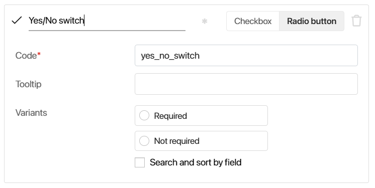
Choose a selection type:
- Checkbox
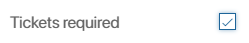
- Radio button
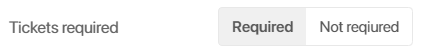
You can configure the selection type you chose when creating the field. To do that, open the Form Settings, select the field, and change the type.
Date/time
This type is used to add a date and/or time to a form.
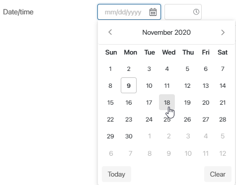
The display format can be configured only when creating the property or context variable.
- Date/time. The user will need to specify a date and time.
- Date. The user will need to specify only a date. The time is automatically set to 00:00.
- Time. The user will need to specify only the time.
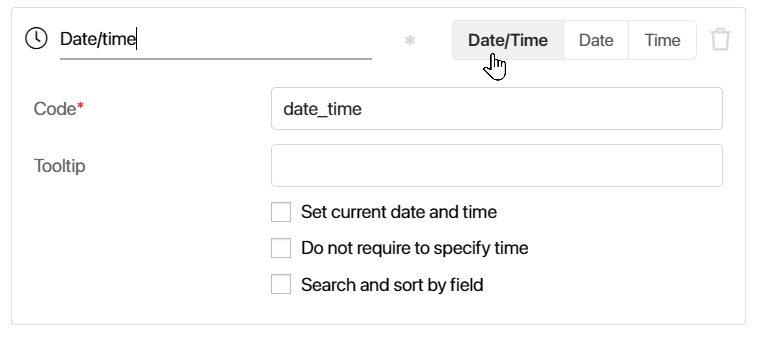
You can also enable the following options:
- Set current date and time. The current date and time will be specified in the field by default. If you select this option for a business process variable, the date of the process start will be specified in the field.
- Do not require to specify time. Apart from the date, the user will be able to specify the time if needed. This option is available for the Date/time format. You can also define the default time:
- Day Start. The default time will be 12:00 AM.
- Day End. The default time will be 11:59 PM.
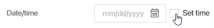
The time you choose will be shown in the Time field by default.
Category
This type of field allows you to let the user choose one or more options from a drop-down list. The list of options is defined when configuring or editing a form or when creating a context variable.
Specify how many options a user can choose by enabling either the Single or Multiple option.
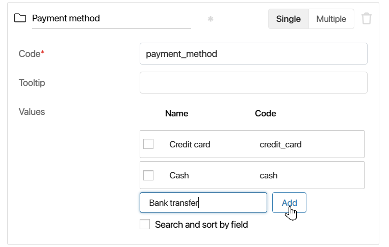
To select an option on the configured form, open the drop-down list.
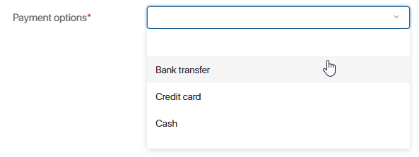
You can reset the value by clicking the icon or by selecting an empty row.
When working with a Category field, you can use scripts to automatically fill out the options in the list, for example, with app statuses. To do that, you have to configure a dynamic list and use a variable that will collect the statuses and their values sent to the Category field as an array. This configuration also ensures that the list is automatically updated when app statuses change, eliminating the need for manual adjustments. You can learn more about these settings in BRIX TS SDK.
Money
A field for entering numbers with a currency code.
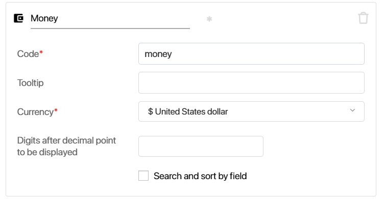
- Currency. Select the currency type from the drop-down list to the right of the field name. You can change the currency when you edit the field after saving. However, the values entered by users before that will not change until somebody edits the field and saves the data. The currency names and codes are in accordance with the ISO 4217 standard.
- Digits after decimal point to be displayed. Specify the number of digits to be displayed after the decimal point on an app item form. This feature is available for integers as well. For example, if you enter 2 in this field, the data on a form will be displayed in the following way: $100.00.
The maximum number of digits depends on the currency type. If it is exceeded, you see the icon. Hover over it to see the number of digits allowed.
Account
This field type is used to store messenger accounts. An app that has this type of field in its context can be linked with sessions in live chats from the Live Chats workspace.
You can specify the Account type: Telegram, WhatsApp, etc. You can also select Other. This format can be used to store an account not included in the list, for example, an additional email address.
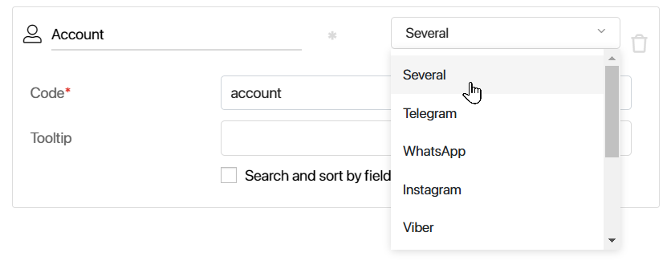
If you select Several, the user will be able to select the account type on their own and add several accounts when entering information in this field on the form.
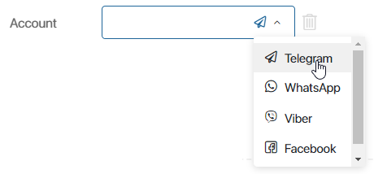
Phone number
The field is used to enter the phone number.
You can specify the Phone number type: main, home, work, etc.
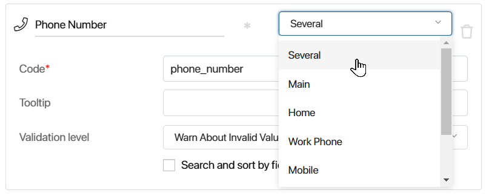
If you select Several, the user will be able to select the phone number type on their own when entering information in this field on the form.
The Validation level option allows you to determine how the number entered on the form is checked against the format of numbers in the selected country:
- Warn About Invalid Value. If the user enters a number in an incorrect format, the icon will appear to the right of the field. At the same time, the app item with such a value in the field can be saved.
- Forbid Invalid Values. If the number format is incorrect, a warning message will appear below the field. To save the app item, the user needs to correct the phone number.
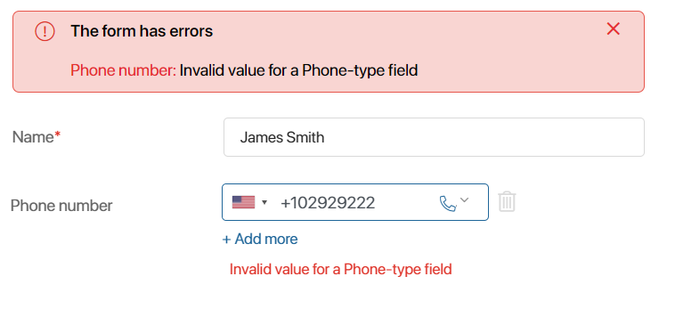
You can add a phone extension using a separator. For example:
- +14841234567 x1234
- +14841234567 ext 1234
- +14841234567;1234
The view form will display the extension number as follows: +14841234567 x1234.
This type of field is used to enter an email address.
You can select the Email type: main, home, or work.
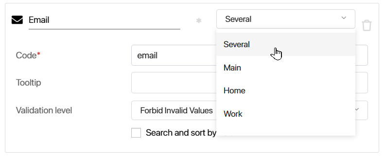
If you select Several, the user will be able to select the type on their own.
The Validation level option allows you to how the email address entered on the form is checked:
- Warn About Invalid Value. If the user enters an email address in an incorrect format, the icon will appear to the right of the field. At the same time, the app item with such a value in the field can be saved.
- Forbid Invalid Values. If the address format is incorrect, a warning message will appear below the field. To save the app item, the user needs to correct the address.
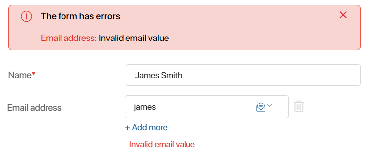
When this field is filled in, additional options are available on the view form: the user can quickly proceed to add and send an email to the specified address, as well as copy the email to the clipboard. To do that, click the icon next to the entered email and select the option you need.
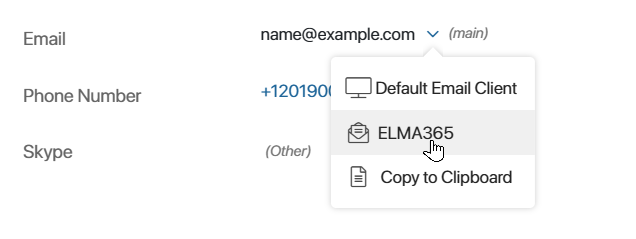
- Default Email Client. Select this option to open the page of the main email client installed on your PC. The recipient’s address will be filled out automatically.
- BRIX. If you linked an email address to the BRIX built-in email client in the Email workspace, you can create and send an email directly in the BRIX interface. The Write message window will open if you click it. The To field will be filled in automatically.
- Copy to Clipboard. Copy the email address to the clipboard.
Image
In an Image type field, you can attach a .jpg, .tif, .tiff, .avif, .webp, .gif, .bmp, or .png file. When setting up this field, you can select how many images can be attached to it: One or Many.
If you check the Clip image when uploading box, the user will be able to select an area of the image to display when uploading it.
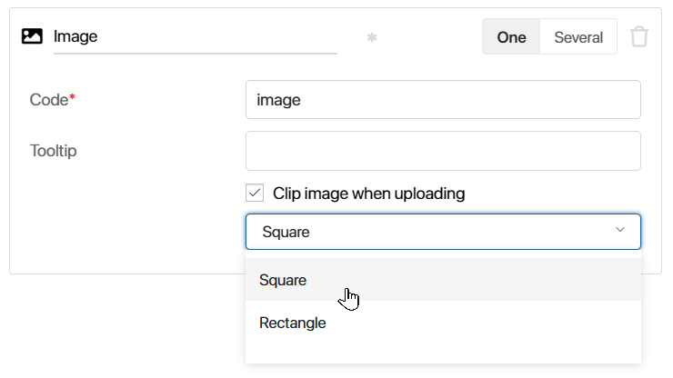
This is how it is displayed on the form.
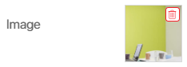
Files
A Files type field allows you to attach files of any type, such as invoices, documents, videos, etc.
You can specify if the user can attach One or Many files.
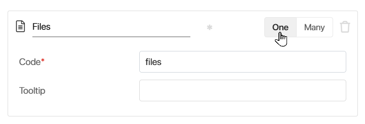
Please note that if you change the type from Many to One, you will be able to keep only one file in the field when editing a previously created item storing various files. Once you save the app item, the excessive files will be removed.
To attach a file, drag it from your computer or click the three dots icon and then add it from the Files workspace or clipboard.

Please note that the Mozilla Firefox browser does not support pasting multiple files from the clipboard. In this case, only the first file will be added.
Here is what an uploaded file looks like:
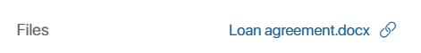
You can copy a link to a file to share with a colleague. To do this, click the icon. Another employee will be able to download the file via the link if they have the appropriate permissions.
By clicking on the file on an app item or task form, you can open its preview page. On the preview page, you can:
- Download the file to your PC by clicking .
- Open a menu with more options by clicking :
- Create Shortcut. Place a link to a file in the selected folder in the Files workspace. This helps you organize data and quickly find the documents you need. Select an option, then navigate to the folder where you want to create a link to this file and click +Paste Shortcut or press Ctrl+V keys.
- Compare with File. Upload a file from your computer to compare it to the current version of the file in on the item or task page. The option is available for .doc and .docx files. Only files of the same formats can be compared.
- Create Copy. You can save a copy of this file to a folder in the Files workspace. All the actions available for files will also become available for this file.
- Compare with Version. This action is available if the file version history for documents from the File-type properties is enabled and configured in the system. The option will be displayed for .doc and .docx files on the item or task page when you add multiple versions. Only files of the same formats can be compared.
Access to the file is determined by the access settings of the app item to which it is added. To allow other users to work with the file, you can provide them with additional permissions to the item.
File version history for the Files type fields
For files uploaded to the Files field, version history is available.
начало внимание
For the version history to become available, the system administrator has to enable the allowAddVersionFileFields feature flag. To learn more, see Modify On‑Premises Enterprise parameters and Modify On‑Premises Standard parameters. If you are using the SaaS edition, to enable the feature flag, please contact your BRIX rep.
конец внимание
To add a new file version to the field, upload the file from your PC when editing the app item, or attach the version in the course of a business process via the Assign Value and Edit App Item activities.
Keep in mind that:
- If you upload a new file to a field of the One type, it will be added as a version for the existing file.
- If you upload files with the same name and format to a field of the Many type, they will be added as versions to the existing files.
- If during a business process or script execution a file is added to a field that matches exactly with the last version of an existing file, a new version will not be added.
All uploaded versions of the file are saved in the system. To display the list of versions on a task page or app item page, add the Document versions widget to the form, and in its settings, specify the property that stores the file.
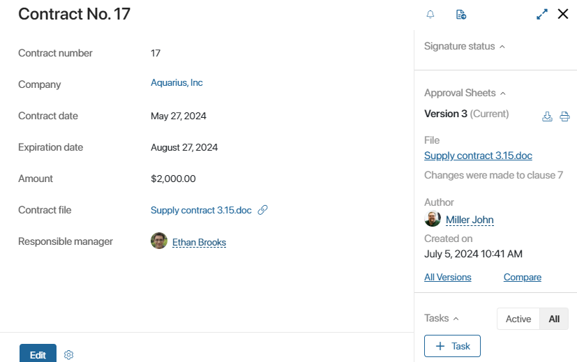
Full Name
This field allows the user to enter the last name, first name, and middle name.
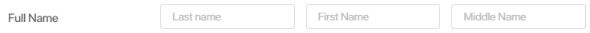
Arbitrary app
This type allows the user to select an item from any app.
You can specify if the user can select One or Many app items.
If Many is selected, items from different apps can be specified on the form.
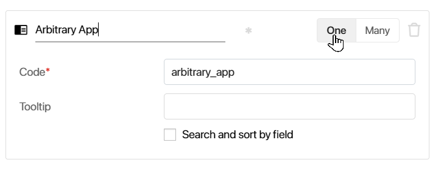
To select an app item, click the field on the form or the magnifying glass icon in it. In the window that opens, an app from the list needs to be selected.
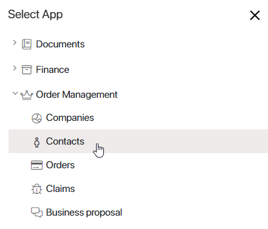
A window with app items will open, and you will be able to select an app item by clicking on it. On the form, the app item will be displayed as a link. Click it to access the app item page.
To select another app item, click the recycle bin icon to the right of the link. The field will be cleared.
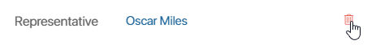
If the recycle bin icon is not displayed, the field is read-only. It is impossible to change its value.
You can add an Arbitrary App type field to a widget. Then you can use it as a universal component on different forms.
Please note that when you configure input and output variables or bind settings to an Arbitrary App type field, you can specify variables of the following types: Arbitrary App, App, File, or Users.
Read more about input and output variables and binding fields.
Link
This field allows displaying a link to a website, a document, or workspace in BRIX, or to other internet sources.
Table
With the Table field, you can structure data by rows and columns, change its design, and insert special formulas that will perform calculations. Learn more about working with fields of this type in the Table data type article.
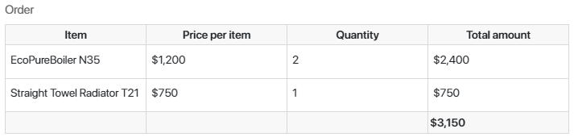
Role
In a Role type field, you can specify a user, a group of users, or an org chart item.
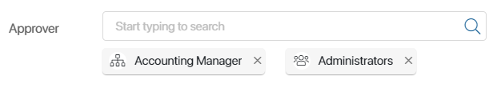
Using a Role type field is convenient when you need to specify a whole group of users of an org chart item. You don’t need to select each specific user. You only need to select the necessary group or position.
You can allow employees to specify locked users and those who have received an invitation to the company but have not yet logged in to the field.
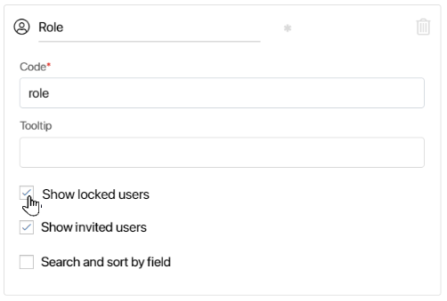
Users
In this field, you can select one or more specific system users.
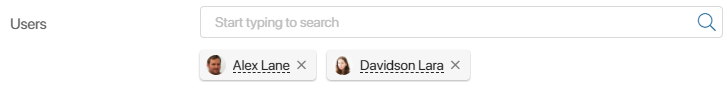
After adding the field to the form, specify the settings:
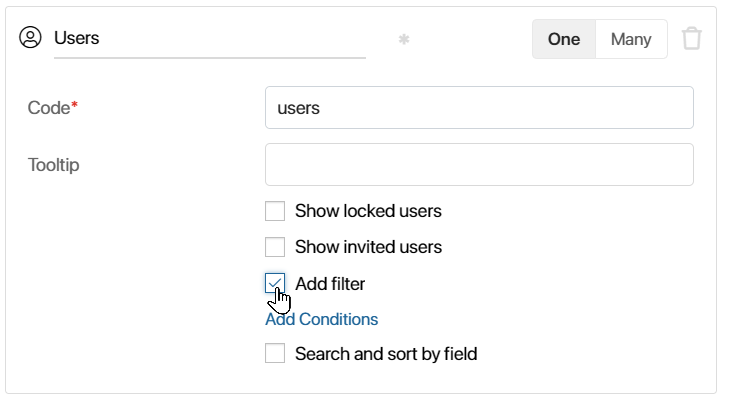
- Enter the field name and code.
- Select the number of users you can specify in the field: One or Many.
For the Users (One) property in the interface designer, you can place nested fields, such as Full Name, Position, etc., on a widget template or app form.
For the Users (Many) type property, you can configure search by parameters and select users from the list by clicking the magnifying glass icon.
- Check the following options:
- Show locked users and Show invited users. The employees will be able to specify locked users and those who have received an invitation to the company but have not yet logged in in the field.
- Add filter. Configure conditions for filtering entries when selecting users in the field. For example, to show only employees of a certain position. Read more about it in the Add a filter for users and app items on the item form article.
App
If you place a field of this type on an app form, you can use it to specify one or more app items of another app. This creates a link between the two apps. The link to the associated app item is displayed on the page of the main app item. Click on it to open the page of the associated item.
The app is selected when configuring the form or creating the context variable. To determine how many app items the user will be able to specify in the field, select One or Many in the variable’s settings.
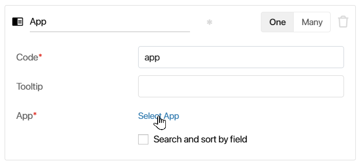
начало внимание
If the field is placed on the form of an app that already contains app items, you cannot change the type from Many to One.
конец внимание
начало примечание
Note
When configuring the display of items on an app page, a field with the subtype Many can be added to a table, tiles, or a kanban board. In this case, when the app is opened, data is loaded for all links from this field for each displayed item page. This increases the system load, especially if there are many such links. To optimize the display of app pages, you can enable eager data loading.
конец примечание
When the app is selected, additional options become available:
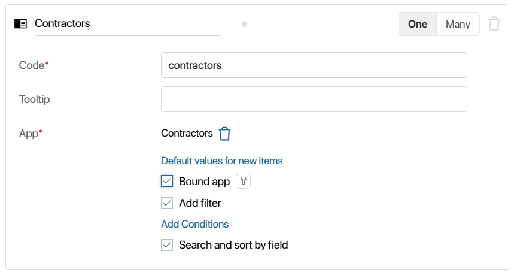
- Default values for new items. Enable the option and configure the app to make it possible for users to create new app items with pre-filled fields directly from the form. For example, the user can create supplementary agreements directly on the form of a contract they relate to. Their fields will be pre-filled with values form the contract. To learn more, see Default values for new items.
- Bound app. Check the option to add child app items when creating an app item and save them only after saving the main item. To learn more, see Bound apps.
- Add filter. Enable the option and configure conditions for filtering entries when selecting items of the linked app. For example, show only items created later than a specified date or items that were added by the current user. To learn more, see Add a filter for users and app items on the item form.
In the interface designer, you can place nested fields of the App type with the One subtype on a widget template or app form.
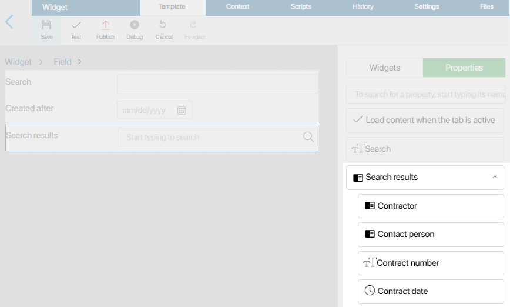
To fill in a field on a configured form, start typing the name of an item or click the magnifying glass icon to go to the list of available items and search by options.
If you have permissions to create app items in the selected app, you will be able to create a new app item as you fill out the fields on the form. To do that, click the +Create button.
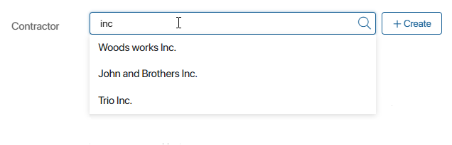
In the advanced mode, the Read-only option is automatically enabled for fields of the App type. When filling out a field on the form, users will only see a button to create a new item. You can configure how it will look like. Read more about it in Create an app item on the page of another app.
To allow users to select an item from the list of existing items when filling out a field, go to the app form settings and disable the Read-only option for this property. Read more in Create, View, and Edit tabs.
Arbitrary type
You can use this type to pass or store arbitrary data in the context. You can read more about it in BRIX TS SDK. You can use this type as an auxiliary variable in scripts. For example, use it to record the results of a client script to create a dynamic form. For more information about this example, read the Use business process activities article.
Event
You can use this data type in the context of a custom widget to send an event from a child widget to a parent one. Events are a button click, data entry in a field, etc. When placing a widget on a form or a page, you can find a custom event in the widget settings on the Events tab. You can work with it in the same way as with system events available by default.
In this way, you can set up a script to run in the parent widget when an action occurs in the child widget. For example, if in the child widget a field value changes or the user clicks a button, then calculations with a formula or data filtering are performed in the parent widget.
To do this, you need to add an Event type variable in the child widget and link a script to it in the parent widget. Then the following happens:
- In a child widget, it records an event, for example, the user clicks a button.
- In a parent widget, it starts an action, for example, data filtering is performed after clicking a button.
You can read more information about the property of the Event type and how to use it in BRIX TS SDK. See the use cases with this data type in the Send an event from a child widget to a parent one and Send an event between two child widgets articles.
Report
A report is a system component that displays data from several source apps in the form of a table. For example, in the Order Register report you can link different apps of the system and display information about an order, customer, contract, and invoice. Read more in Report.
The Report type field allows to add a link to the report created in the system to the app form or page. When you click on the link, the page with the configured report table will be opened.
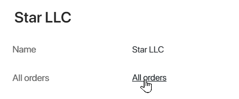
Creating a Report type field is available only in the interface designer on the Context tab.
To add a Report type field:
- In the app, enable advanced mode.
- Go to the interface designer of the selected app form or page and click +Add on the Context tab.
- Specify a name and property type, select the report created in the system, and click Create.
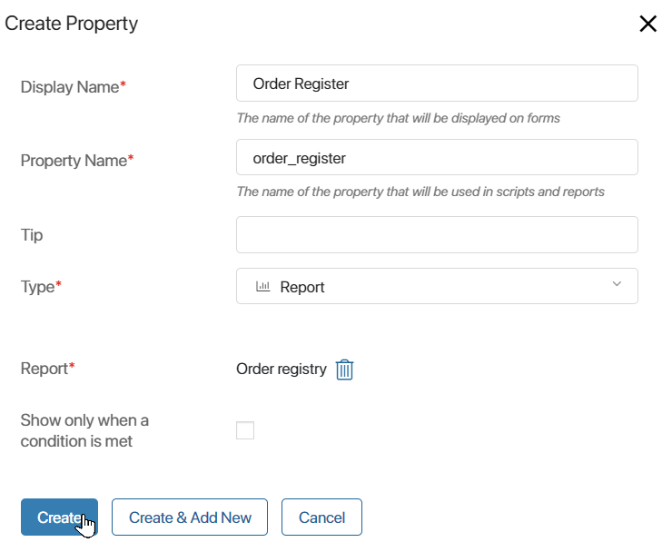
Now you will be able to refer to the fields of the selected report in scripts using TS SDK methods or add a link to the report on a form or page.
- Click the Template tab, select Properties in the right panel, and drag the Report type property to the field to be modeled.
- In the opened window, name the field on the form and click Save.
- To edit the report link name, change the field name on the Context tab.
- Save and publish the configured form or page.
For the Report type field, the Read-only option is enabled. Users will be able to navigate to the report page using the specified link, but will not be able to change the field value.